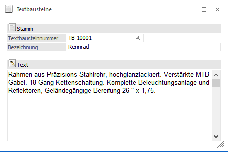
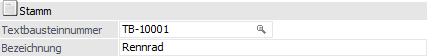
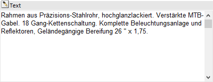
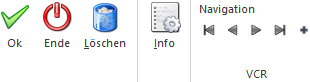

Ein Textbaustein kann bis zu 2000 Zeichen umfassen und wird im Menüpunkt…
1 WinLine FAKT
1 Stammdaten
1 Artikelstammdaten
1 Textbausteine
… als Fließtext erfasst. Solche Textbausteine können Produktbeschreibungen, Garantiehinweise, etc. darstellen.
Hinweis
Die Textbausteine können direkt mit einem bestimmten Artikel verknüpft werden bzw. in der Belegbearbeitung auch manuell abgerufen werden. Die Verknüpfung zu einem Artikel erfolgt im Artikelstamm (Register "Text") in den Eingabefeldern "Makro (Verkauf)" bzw. "Makro (Einkauf)".

Folgende Felder stehen zur Definition eines Textbausteins zur Verfügung:
Stamm

Ø Textbausteinnummer
An dieser Stelle wird die Nummer (alphanumerisch) des Textbausteins definiert.
Ø Bezeichnung
In dem Feld "Bezeichnung" wird der Textbaustein in Kurzform beschrieben.
Text

Ø Text
In diesem RTF-Feld wird der Textbaustein als Fließtext erfasst. Sobald der Fokus in das Feld gelegt wird, können über den Ribbon "TEXTFORMATIERUNG UND TOOLS" Textformatierungen vorgenommen werden (nähere Informationen entnehmen Sie bitte dem Kapitel "Textformatierung und Tools Ribbon" im WinLine Allgemein Handbuch).
Anmerkung:
Ein leerer Textbaustein sollte nicht angelegt werden.
Buttons

Ø Ok
Durch die Anwahl des Buttons "Ok" bzw. der F5-Taste wird der Textbaustein gespeichert.
Ø Ende
Durch die Anwahl des Buttons "Ende" bzw. der Taste ESC wird der Programmbereich geschlossen und alle nicht gespeicherten Eingaben werden verworfen.
Ø Löschen
Mit Hilfe des Buttons "Löschen" kann ein Textbaustein entfernt werden.
Ø Info
Über den Button "Info" kann ein neues Fenster geöffnet werden, in dem alle Artikel aufgelistet sind, in denen der selektierte Textbaustein hinterlegt wurde (Einkauf und Verkauf). Nähere Informationen hierzu sind dem Kapitel Makro-Info / Stücklisten-Info zu entnehmen.
Ø VCR-Buttons
Über die so genannten VCR-Buttons kann in den vorhandenen Datensätzen geblättert werden.
ü  Damit kann der
erste Datensatz angesprochen werden.
Damit kann der
erste Datensatz angesprochen werden.
ü  Damit kann der
vorherige Datensatz angesprochen werden.
Damit kann der
vorherige Datensatz angesprochen werden.
ü  Damit kann der
nächste Datensatz angesprochen werden.
Damit kann der
nächste Datensatz angesprochen werden.
ü  Damit kann der
letzte Datensatz angesprochen werden.
Damit kann der
letzte Datensatz angesprochen werden.
ü  Damit wird die
nächste freie Nummer für die Neuanlage gesucht.
Damit wird die
nächste freie Nummer für die Neuanlage gesucht.